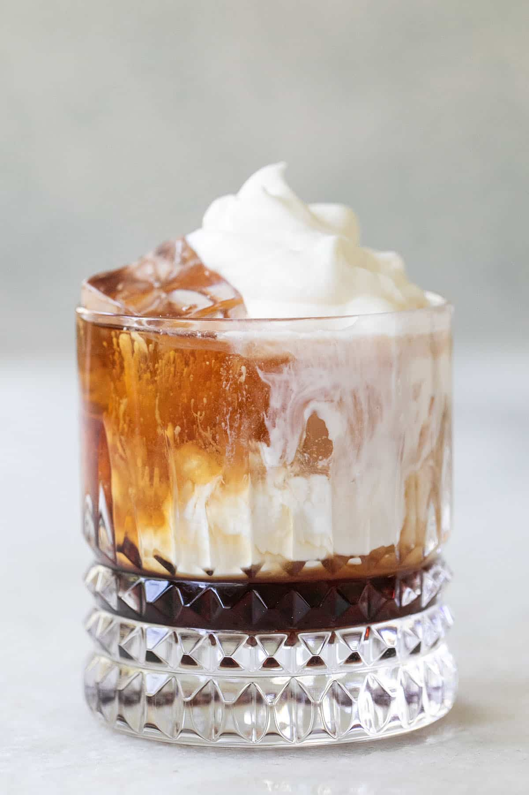

White Russian

Description
The Big Lebowski was onto something with this creamy coffee-flavored cocktail. A healthy dose of vodka in the mix assures that 'the dude abides.'
Ingredients
- 2 fluid ounces vodka
- 1 fluid ounce coffee-flavored liqueur
- 1 cup ice
- 1 fluid ounce heavy cream
Steps
- Combine vodka, coffee liqueur, and ice in an old-fashioned glass. Pour in cream.